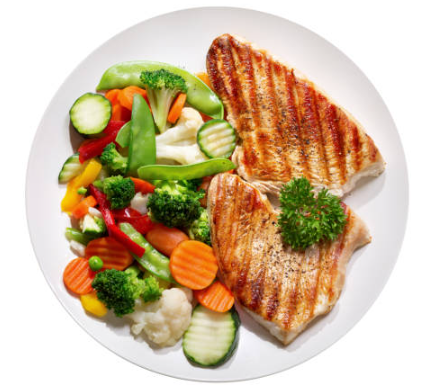
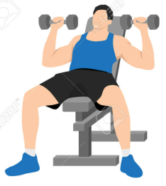

Solo con dieta
Funciona
Crea deficit calorico
Te sentiras mejor
No ganarás músculo
Es más dificil mantener los resultado

Con dieta y ejercicio
Funciona mejor
Fomenta un mayor deficit calórico
Te sentirás mejor
Mejora tu composicion corporal
Es mas fácil mantener la perdida de grasa

Con dieta, ejercicio y cardio
Es la mejor opción
Ayuda a crear el mayor deficit calórico
Te sentiras mejor
Mejora rápidamente tu composición corporal
Es más fácil mantener la pérdida de grasa